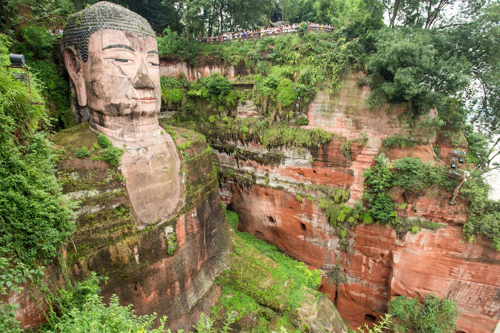

Tappa 3 di 6 · 3 notti
Chengdu
成都
Giovedì 5 — domenica 8 novembre · arrivo in treno, partenza in treno per Guilin

Giorno per giorno
Tre notti: una giornata fuori città, una in città, e una mattina.
Giovedì 5 · arrivo
Il treno da Xi'an mette circa quattro ore. Si arriva nel pomeriggio, e la sera è la prima occasione buona per l'hotpot — meglio farlo ora che l'ultima sera, così se piace c'è tempo per ripetere.
Venerdì 6 · Leshan
Giornata intera, fuori città. Il treno veloce ci mette circa un'ora, poi c'è il trasferimento al sito.
- Il Buddha è alto 71 metri e scavato nella parete di roccia rossa sopra il punto in cui si incontrano tre fiumi. È stato scolpito nell'VIII secolo per calmare le acque.
- Dalla barca lo vedi tutto intero, di fronte, in una mezz'ora di navigazione. È la vista che la maggior parte della gente ha in mente.
- Dalla scalinata scendi lungo il fianco, fino ai piedi, e ti rendi conto delle proporzioni. Ma è una fila in colonna singola su gradini scavati, e nei giorni pieni può portare via ore.
Sabato 7 · panda e città
- Base dei panda all'apertura. Li nutrono la mattina presto: è l'unica finestra in cui sono svegli, in piedi e occupati a mangiare. Verso le dieci o le undici dormono, e un panda che dorme è una palla di pelo immobile su un ramo.
- Monastero di Wenshu: monastero buddhista in funzione, con cortili, incenso, una sala da tè e un ristorante vegetariano. Non è un museo.
- Pomeriggio nella casa da tè del parco del Popolo: sedie di bambù, tè al gelsomino riempito di continuo, e gente che sta seduta per ore senza fare niente. Qui c'è anche chi pulisce le orecchie con gli attrezzi, mestiere locale e spettacolo a parte. È il modo in cui Chengdu si capisce.
- Hotpot la sera. Chiedi weila se non vuoi piangere — e sappi che il weila di Chengdu è comunque piccante.
Domenica 8 · mattina e treno
Il treno per Guilin parte da Chengdu East nel primo pomeriggio, quindi resta una mattina. Sono circa cinque-sette ore via Chongqing e Guiyang, e si arriva a Guilin North verso sera.
- Jinli: vicolo ricostruito accanto al tempio di Wuhou, molto turistico ma comodo e piacevole da attraversare.
- Museo Jinsha: l'alternativa vera. È costruito sopra lo scavo di una civiltà di tremila anni fa trovata sotto la città nel 2001, con oggetti d'oro e avorio che non somigliano a niente della Cina classica.
Il giorno recuperato da Longji è finito qui: prima Chengdu aveva due giorni di cui uno intero mangiato da Leshan. Adesso la città esiste per davvero.
Leshan, la scelta della giornata

Barca o scalinata, non entrambe con calma. La scalinata è l'esperienza fisica: passi accanto al ginocchio, vedi le dita dei piedi da vicino. Ma è una fila stretta e senza scorciatoie, e se il sito è pieno se ne va mezza giornata. La barca dà la vista frontale completa in trenta minuti. Se il tempo è uno solo, la barca rende più di quello che costa.
Decidi sul posto guardando la fila all'imbocco del sentiero, non prima. E ricorda che tra andata, visita e ritorno la giornata è finita: non aggiungere altro al venerdì.
Luce e temperature
| Giorno | Alba | Tramonto | Luce |
|---|---|---|---|
| Gio 5 nov | 07:21 | 18:13 | 10h 52m |
| Ven 6 nov | 07:21 | 18:12 | 10h 51m |
| Sab 7 nov | 07:22 | 18:12 | 10h 50m |
| Dom 8 nov | 07:23 | 18:11 | 10h 48m |
Medie di novembre: 11–18°, umido. Chengdu sta in una conca e il cielo è coperto quasi sempre: qui il sole è una notizia, non un'abitudine. Tramonto dopo le sei — è la tappa con più luce pomeridiana di tutto il viaggio, perché siamo all'estremo ovest del fuso.
Cibi tipici
Il Sichuan non è solo piccante: è mala, cioè due sensazioni diverse insieme.
Come funziona il gusto qui. La è il peperoncino, il bruciore che conosci. Ma è il pepe di Sichuan, che non brucia: intorpidisce, fa formicolare le labbra e le rende insensibili. Insieme sono la firma della regione, e il formicolio spiazza più del piccante la prima volta.
Huoguo · hotpot
Una pentola divisa in due al centro del tavolo: da un lato brodo di grasso di manzo, peperoncino e pepe, dall'altro brodo chiaro. Ordini piatti crudi — carne a fette, funghi, tofu, verdure, e le parti dell'animale che in Italia non si vedono — e li cuoci tu. È una cena lunga e rumorosa, ed è il rito sociale della città.
Mapo doufu
Tofu morbido in una salsa rossa di fagioli fermentati e carne di manzo tritata, coperta di pepe di Sichuan macinato. Il piatto sichuanese più famoso al mondo, e quasi sempre diverso da come lo hai mangiato altrove.
Dandan mian
Noodles con olio di peperoncino, sesamo, verdura conservata e maiale tritato, da mescolare tutto prima di mangiare. Nato come cibo da venditore ambulante col bilanciere sulle spalle — dandan è il bilanciere.
Chuanchuan xiang · spiedini nel brodo
La versione popolare dell'hotpot: prendi gli spiedini da un frigo a muro, li butti in un brodo bollente comune, e alla fine paghi contando i bastoncini. Economico, locale, e il posto dove mangiano gli studenti.
Zhong shuijiao e long chaoshou
Due tipi di ravioli. I primi arrivano in una salsa di soia dolce e aglio, densa e rossa. I secondi sono wonton dalla pelle sottilissima in olio di peperoncino. Entrambi sono da spuntino di mezzogiorno.
Fuqi feipian
Fette sottili di manzo e frattaglie fredde, in olio di peperoncino con arachidi e sedano. Il nome vuol dire «fette di marito e moglie». È un antipasto, e uno dei sapori più tipici che puoi provare.
Quando serve una pausa
Non tutto in Sichuan è piccante. Tianshui mian sono noodles spessi in salsa di soia dolce, senza peperoncino. Il guokui è una focaccia sfogliata ripiena, da mangiare in mano. E il tè al gelsomino della casa da tè esiste esattamente per spegnere la bocca.
Appunti su Chengdu
Questa nota resta solo su questo dispositivo. Vive nella memoria di questo browser, non passa da nessun server e non la ritrovi da un altro telefono. Se cancelli i dati del browser, non c'è più.